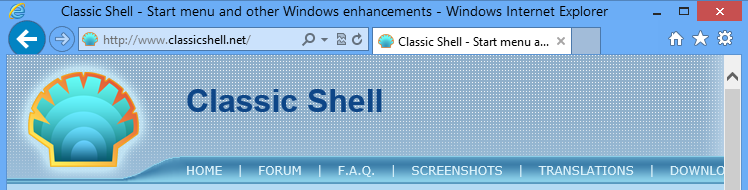
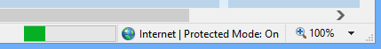
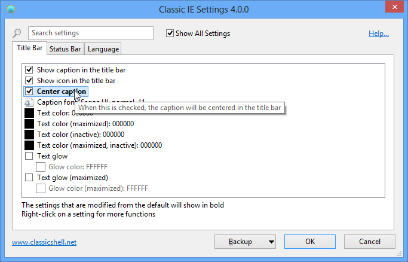
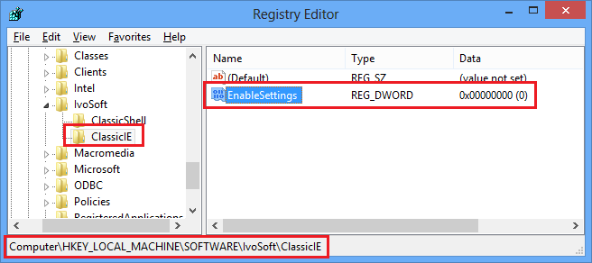

Classic IE
Classic IE
は、
Internet Explorer 用の小さなプラグインで、以下を行います：
- タイトルバーにキャプションを追加し、ページの完全なタイトルを確認できるようにします
- ステータスバーにセキュリティゾーンを表示します
- ステータスバーに読み込みの進行状況を表示します
タブに収まらない場合でも、ページの完全なタイトルを確認できます：

進行状況とセキュリティゾーンを確認できます：

インストール
Classic IE のインストール後に Internet Explorer を初めて実行すると、
ClassicIEBHO という新しいアドオンがインストールされたこと、および
それを有効にするかどうかを尋ねるプロンプトが表示されることがあります。「有効にする」ボタンをクリックしてください。
プロンプトが表示されない場合は、ツール -> アドオンの管理 に移動し、ClassicIEBHO が有効になっていることを確認してください。アドオンを有効にした後、プラグインを有効化するために Internet Explorer を再起動する必要があります。
設定
設定には ツール -> Classic IE の設定
またはスタートメニューからアクセスできます。設定では、
キャプションの色とフォント、およびステータスバーに表示する情報を制御します。

基本設定のみを表示するか、利用可能なすべての設定を表示するかを選択できます。各設定にマウスを合わせると、その目的の説明が表示されます。検索ボックスに入力して、名前で設定を検索できます。
すべての設定には既定値があります。既定値は固定の場合もあれば、
現在のシステム設定に依存する場合もあります。一度設定を編集すると「変更済み」となり、太字で表示されます。既定値に戻すには、設定を右クリックします。
設定を XML ファイルに保存し、後で読み込み直すことができます。
これらの機能にアクセスするには バックアップ ボタンを押します。そこから
すべての設定を既定値にリセットすることもできます。
設定を保存するには OK を押します。新しい設定を適用するには Internet Explorer を再起動する必要があります。
管理者設定
設定は
ユーザーごとで、レジストリに保存されます。既定ではすべてのユーザーが
自分のすべての設定を編集できます。管理者は特定の設定をロックして、
どのユーザーも編集できないようにできます。これは設定を HKEY_LOCAL_MACHINE\SOFTWARE\OpenShell\ClassicIE レジストリキーに追加することで実現されます。
設定をロックするのではなく、その初期値だけを上書きしたい場合もあります。
その場合は、レジストリ値の名前に「_Default」を追加します。
設定のレジストリ名とその値を知る最も簡単な方法は、それを変更してから
HKEY_CURRENT_USER\Software\OpenShell\ClassicIE\Settings で調べることです。
設定を既定値にロックしたいが、
既定値が何か分からない場合があります。その場合は DWORD 値を作成し、
0xDEFA に設定します。
グローバル設定 EnableSettings もあります。レジストリで 0 に設定すると、
ユーザーが設定ダイアログを開けなくなります：

グループポリシーによる設定の編集もサポートされています。インストールフォルダーにある PolicyDefinitions.zip ファイルを展開し、詳細についてはドキュメント PolicyDefinitions.rtf を読んでください。